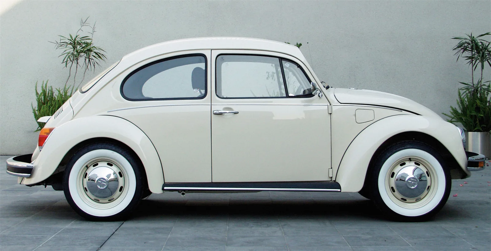
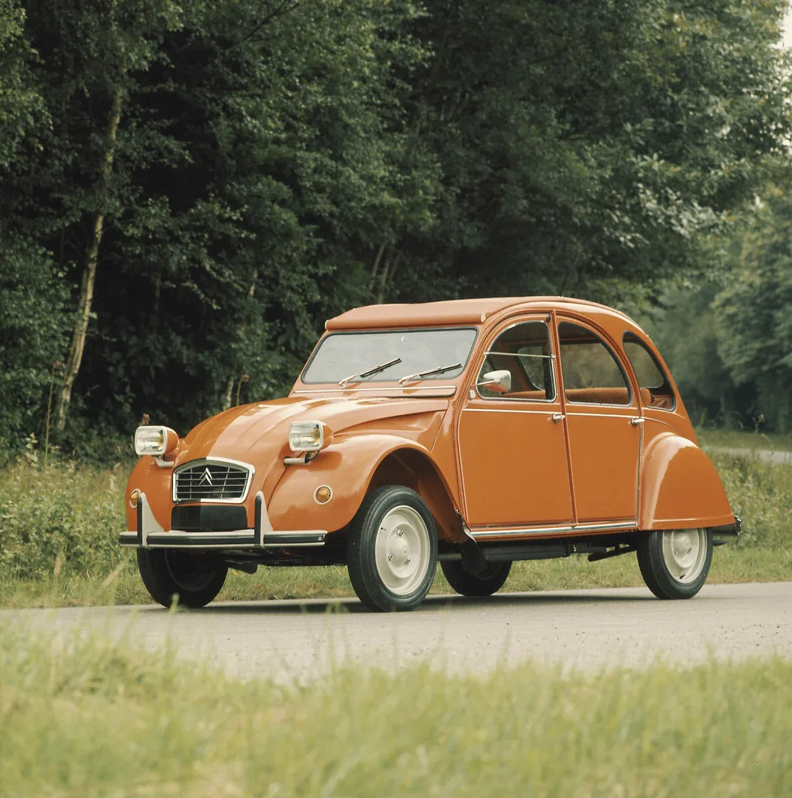
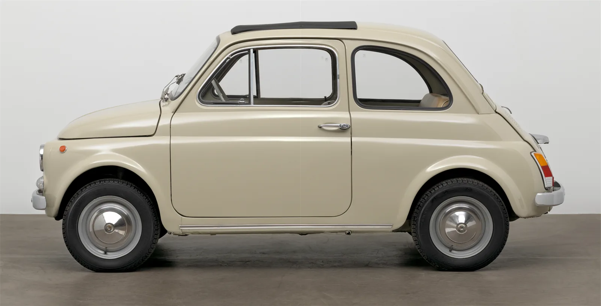
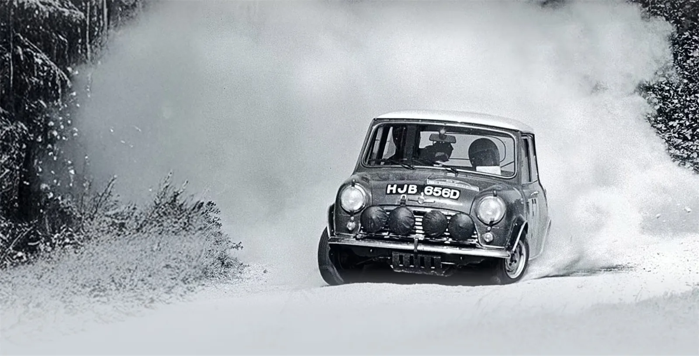

01
‹ Volver al TFG
Bloque 01 de 03
Coches del pueblo
Cómo Beetle, 2CV, Fiat 500 y Mini demostraron que la escasez es compatible con la excelencia.
Entre finales de los años 30 y mediados de los 50, media Europa salió de una guerra o de una crisis económica con la misma pregunta encima de la mesa: cómo poner a rodar a la mayoría de la población con el mínimo de recursos. Alemania, Francia, Italia y Gran Bretaña respondieron cada una a su manera, pero con la misma restricción de fondo: coches baratos de fabricar, baratos de mantener y sencillos de reparar.
La escasez, lejos de empobrecer el resultado, obligó a los ingenieros a eliminar todo lo superfluo y quedarse solo con lo esencial. Esa disciplina —diseñar hacia adentro, no hacia afuera— es la que convirtió a estos cuatro coches en iconos: no se pensaron para impresionar, sino para funcionar, y precisamente por eso acabaron impresionando.
A continuación, los cuatro coches: Beetle, 2CV, Fiat 500 y Mini.
Los cuatro coches

022CV
Nació para motorizar el campo francés: llevar a dos granjeros, gastar solo 3 litros a los 100 y superar la 'prueba de los huevos' sin romper ni uno. El rey del antidiseño, sin lujos pero con una silueta inmortal.
03Fiat 500
Diseñado por Dante Giacosa en 1957 para motorizar la Italia del 'boom' económico: solo 2,96 metros y menos de 500 kilos. Su frontal liso, sin parrilla, parecía una cara amable que le valió el Compasso d'Oro y un puesto en el MoMA.
04